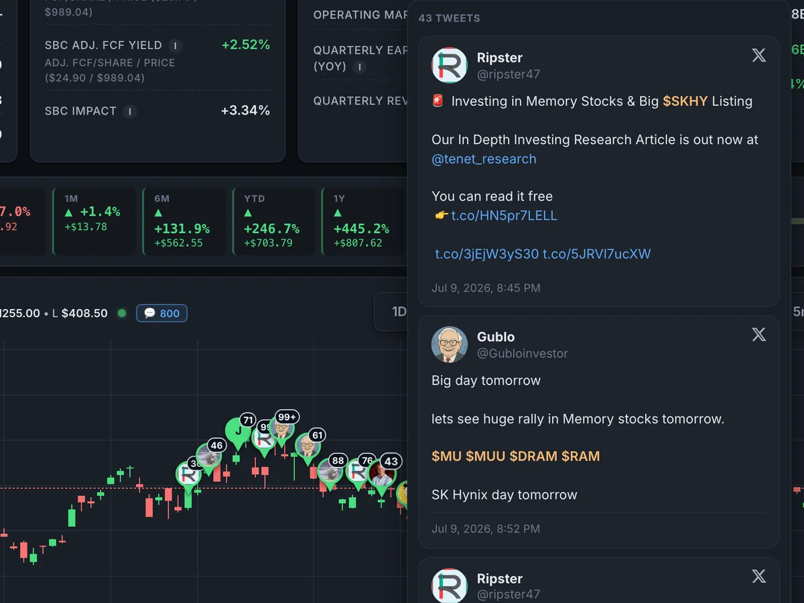

13 yrs
Carrier networking
Network Engineer 3 at Charter Communications / Spectrum Enterprise, 2013–2026. MPLS, BGP, IS-IS and Carrier Ethernet on Juniper, Cisco and Nokia: the stuff that keeps businesses and cell towers online.
Open to work · Milton, Wisconsin
Live from my basementHi, I'm Mike Purpura. Network engineer turned AI enthusiast.
Thirteen years keeping Charter's fiber network running. A deep personal grudge against doing anything twice. These days I build AI tools on my own hardware, with guardrails so they don't do anything dumb while nobody's looking.
00 · The 20-second version
13 yrs
Network Engineer 3 at Charter Communications / Spectrum Enterprise, 2013–2026. MPLS, BGP, IS-IS and Carrier Ethernet on Juniper, Cisco and Nokia: the stuff that keeps businesses and cell towers online.
2020
Python and Paramiko against thousands of routers, then two years on the DevOps team shipping tools for engineers through GitLab CI/CD.
Now
Claude Code daily, local models on a Mac Studio, and a house full of tools my family actually uses. They complain about them, which is how I know.
Next
A small team that wants the boring stuff automated. AI and automation, DevOps or NetDevOps. Madison to Milwaukee, hybrid.
01 · How this site works
No cloud GPUs, no website builder, no stock photos, no trackers. Every image, song and voice on this page was generated by AI models running on my own Mac Studio, and the page itself is coming to you from a Raspberry Pi a few feet away, over Starlink.
IPv4 or IPv6, anywhere
TLS 1.3 · HTTP/3 · cache · DDoS shield
No public IPv4 (carrier-grade NAT), so the Pi dials out over IPv6
nginx in my basement, reachable only through the tunnel
Local AI made every asset · live within 2 min of a push
Your trip here, live
Your request went through Cloudflare, down a tunnel over Starlink, and into a Raspberry Pi in Milton, Wisconsin.
The server, right now
A Raspberry Pi 4 with 2 GB of RAM, in my basement.
Theme song
Yes, this site has a theme song: a sugar-rush pop number about a tiny website in a basement and the robots who do its chores. Rendered locally with ACE-Step 1.5 XL and mastered to −14 LUFS. It's introduced by Lord Pemberton, my AI radio DJ, who does not approve.
Lord Pemberton, then the song
[intro] Ooh, ooh, okay, cool [verse] Down in a basement where the winters are long A little Raspberry Pi hums a happy song A packet came a-knocking, pink and blue and bright It rode up to a satellite and back down tonight [pre-chorus] And all the little robots say, we've got this one They do the boring stuff, so the people have fun [chorus] Okay, cool! Okay, cool! Gummy worms and fiber light, everything's alright Okay, cool! Okay, cool! Do it once, do it twice, then the robots get it right Okay, cool! [verse] A computer's dreaming up a picture and a tune It paints a little garden and a candy-colored moon No clouds were rented, nobody's watching you here Just a tiny little server, glad you came, my dear [bridge] Ping, ping, the packet sings Hop by hop on gummy wings Frame to packet, packet to you Pink to violet, violet to blue [chorus] Okay, cool! Okay, cool! Gummy worms and fiber light, everything's alright Okay, cool! Okay, cool! Do it once, do it twice, then the robots get it right Okay, cool! [outro] Okay, cool
Narrator
Your guide is an old wizard in a grey hat. His voice was designed, not cloned: OmniVoice generated it from a description (male, elderly, low pitch, British), and VoxCPM2 performs it on the Mac Studio, with a stage direction for each chapter. Each chapter was cast from six takes: Whisper had to hear every word, and the liveliest one that still sounded like him got the part. Nobody's real voice was used. Turn it on and each chapter gets read to you as you scroll, with captions. The soundtrack ducks under him automatically.
Soundtrack
An instrumental bed made locally with ACE-Step 1.5 and looped so you can't hear the seam. It stays off until you ask for it.


And the words? They started as a week of voice interviews with an AI agent and got shaped with Claude Code. The opinions are all mine. The source is on GitHub, and every push to it is live on the Pi within two minutes.
And the scroll bar? It's a tiny internet. Scrolling carries a packet from your computer to me, one router per section. It leaves as a frame and becomes a packet at your router. Then IS-IS runs Dijkstra across a made-up ISP, and BGP's real best-path rules pick every exit through Cloudflare and Starlink, the two networks this page actually crossed. Hover over itTap it for the traceroute. Thirteen years in carrier networking will do that to a scroll bar.
The rule
Do it once by hand. Do it twice and complain about it. The third time, a computer does it. That rule took me from spreadsheets to Python to AI. The tools keep changing. The rule doesn't.

02 · The route here
Thirteen years, one company, one network, and one long-running grudge against repetitive work.
An AAS in IT Network Specialist (Unified Communications), plus a technical certificate in website hardware and software administration. Graduated in December 2012.
My first real job in tech: Charter's enterprise fiber team. Point-to-point circuits, cell backhaul out to carrier switching offices, off-net circuits through other carriers, and sprawling multipoint networks for customers like a Fortune 500 insurer and a regional grocery chain. Every turn-up got tested before I'd call it done.
1,000–2,000 circuits in a good year. Just mine, not the team's.
Before I'd properly learned to code, I built a spreadsheet that drove our order system through a web browser: circuit IDs, IPs, VLANs, device assignments, even the Visio diagram. An order that took over an hour took about five minutes. Thirty engineers ended up using it. Management mostly wanted to know why I was suddenly so fast.
Charter bought Time Warner Cable and our all-Cisco region woke up multi-vendor. I led the move to Juniper, wrote the internet, voice and WAN standards in Confluence, and built a JavaScript tool that spit out MX960 and MX480 configs on demand. We were one of two teams, out of about seven, that escaped the stale-spreadsheet era. Somewhere in there I also earned my CCNP. (SWITCH exam: 835, needed 790. Not that I remember.)
New router standards were landing a few times a week. I did them by hand until I couldn't stand it, then taught myself Python: weekly audits and fixes across every Cisco ASR 9000, Juniper MX and Nokia 7750 in the region. When the regional QoS policy needed rewriting on every PE router, I automated it by myself. Other regions put five or six engineers on it.
Then I got pulled onto the DevOps team, building apps for the network engineering org. On our password-rotation platform (thousands of core routers, hundreds of thousands of customer devices) I wrote the multi-vendor modules: the home-grown Paramiko code that knows how to talk to each vendor's CLI, quirks and all. HashiCorp Vault for secrets, GitLab CI/CD from candidate to live.
My old regional work got split across six engineers: three seniors, two NE4s and a principal. I choose to take that as a compliment.
In January 2025 I started vibe-coding a garden planner, mostly to find out what the AI hype was about. By spring 2026 there was a Mac Studio in my basement running AI models around the clock, and I was spending half my day in Claude Code. The garden got a planner. The house got a voice. It escalated.
Tuesday, my kid was born. Friday, Charter closed my office. I took some time to be a dad, then went back down to the basement and built most of what you're about to scroll through.
That's the part where you come in. Send a packet →
03 · By the numbers
2,000
circuits a year at my peak. My share alone.
5min
per circuit order after my spreadsheet. It used to take over an hour.
100k+
devices my vendor modules logged in to. Politely.
1
engineer on the region-wide QoS rollout (me). Other regions used five or six.
6
engineers it took to cover my old work when I moved to DevOps.
0
firewall ports I opened to serve this site. It still reached you. (Details up top.)

04 · What I build now
A Mac Studio, two Raspberry Pis, a media server and a NAS, all doing real jobs for real people (my family). None of it is a tutorial project. Every one of these exists because something in my house annoyed me.
A · The Hub
One screen for every model, session and generator in the house, and a big Approve button.
I run a lot of AI: Claude Code sessions, local language models, image and music generators, a voice assistant on my phone. That was a dozen terminals and twenty browser tabs, so I built one web app to run them all. My favorite part is the approval queue. When an AI wants to change something, it parks the request, and nothing happens until a human (me) hits Approve.
FlaskWebSocketsOllamaComfyUIMLXClaude Code
B · Tickerscope
Stocks are a big part of my life, and so is reading X before the coffee kicks in. Naturally, I put them on the same chart.
Tickerscope started as an X firehose. It pulled every post from the accounts I tracked, and local AI did the reading: a small model triaged the stream and tossed the noise, then sent the interesting posts up to bigger models, as large as 235 billion parameters, for a bullish-or-bearish call. A vision model even read the charts people posted. Each post landed on the candlestick chart at the moment it was said, colored by the call, so you can see who called the run and who was late. 38,000 posts in, I cut the firehose down to on-demand lookups my AI agents can run, and Tickerscope became my portfolio's system of record: live-priced positions, a tax page that plans harvests around wash sales, and a morning brief my agents read before the bell.
PythonFlaskOllamaQwen 3twikitLightweight ChartsSQLite

C · The house platform
The house has a voice. His name is Thaddeus. He's British, and he will wake you up for a tornado.
When the National Weather Service issues a warning, a local AI model summarizes it, Thaddeus reads it on every speaker in the house, turns the volume up for tornadoes, then puts every room back exactly how it was. There are no quiet hours, on purpose. The same Raspberry Pi runs our smart plugs, a recipe book you can dictate to while you cook, AI radio DJs, and a baby tracker that 3 a.m. me depends on more than I'd like to admit.
PythonSQLitenginxSonos / UPnPESPHomePiper TTSOpenAPI

D · Fleet ops
Things used to break quietly. Now they break loudly, and usually once.
Five machines, two Pis acting as a high-availability Tailscale router pair, and a pile of services and certificates. So: agentless monitoring over SNMP and SSH, patch management with staggered reboots, certificate-expiry alarms, and a page that checks my code matches across the Mac, GitHub, a local git mirror and production. Push code and every Pi deploys itself within two minutes.
SNMPParamikonftablesTailscaleLet's EncryptForgejo

E · GrowYear
PC Part Picker, but for seeds.
Planning a garden means spreadsheets, sketches and five seed catalogs, and I am not that organized. GrowYear holds 2,500+ real varieties from 12 seed companies. Pick a seed, point at a bed, and it works out the spacing, how many to start indoors and when to do what. It started on Lovable in January 2025 as an excuse to learn AI coding, and got rebuilt with Claude Code this fall.
ReactTypeScriptViteSupabase / Postgres

Radio stations whose DJs write their own sets and talk between songs. Lord Pemberton, a deeply pompous aristocrat, hosts the classical station. He introduces this site's theme song near the top of this page, under protest.
One voice service for every app in the house. Apps decide what to say. Thaddeus decides which rooms, how loud, and whether he already said it.
Feeds, naps and diapers, charted. Built so 3 a.m. me can find out what 1 a.m. me already did.
We heat with propane, so I pulled three decades of federal price data. Locking an October price beat floating in 25 of 29 winters. Also, the dealer's cut has tripled since 1992. Shop dealers first.
Talk while you cook and an AI writes it down: ingredients, equipment, method, the works. So the next batch of garden hot sauce comes out like the last one.
3 TB reclaimed, and a year of family photos found living only in the backup. Every deletion was hash-verified: matching by name and size alone would have tossed 160 GB of real data.
Game-night toolkit: live dice, a Discord soundboard bot and an AI-hosted radio station for each campaign. The dungeon master is still mostly human.
A voice agent interviewed me for a week (96 questions), keeps my profile current and tailors a résumé to each posting. This site is partly its fault.
Its one job is to earn enough to cover my AI subscriptions. Status: trading fake money, with strict risk limits and a lot of humility.
05 · Before AI

Everything in this strip is real, pulled straight off my NAS: notes, code and configs from projects I built by hand. Badly at first, then less badly.
2017
GNS3 labs on a home PC, the official cert guides and a lot of late nights. Passed SWITCH with an 835 (790 to pass), and the CCNP R&S landed in January 2018.
CCNP Pass 001.jpg
2019
A door sensor on a Raspberry Pi pin, a web button to open it, and a cron job that closes it when somebody (not me) leaves it open.
garagedoorcheck.py
2019
A web page that flips our HDMI switch over RS-232 through a USB-serial adapter. The original remote is still missing.
port0R.php … poweroffR.php
2019 → 2020
Arduino, three soil sensors, three pumps and status LEDs. Even v1 had guardrails, years before I'd say that word about AI:
int PumpFrequencyLimiter = 14400; //TIME PERIOD FOR
// EACH WATERING 14400 = 4 hours // PUMP WILL ONLY
// RUN ONCE PER TIME PERIOD
int PumpCutOffTime = 15;Plant Waterer v1.txt
2020
The “Pepperpi”: a Raspberry Pi with temperature, humidity and soil sensors, charted live in a browser. Plus the “Pepperduino” for the far end of the garden. The peppers did not care.
soil_logging.py
2020
Recording and archiving IP camera streams on a Raspberry Pi, with scripts to record and convert the footage.
recordCAM.sh
2022
Relays switched over MQTT from MicroPython on ESP32 boards. Smart plugs, the hard way.
Turn Relay on-off.txt
2023
My first AI app: a chatbot on OpenAI that only talked food and answered in strict JSON (recipe, timing, ingredients, allergens), in Docker behind nginx. Ask it about anything else and it politely changed the subject.
backend/app/main.py
2023
A Kali live USB plus EVE-NG with virtual Cisco routers, and Python traffic generators for MTU and MAC-table testing. A carrier lab in a backpack.
Network_Testing/README.txt
2024
Got my GMRS license, flashed custom firmware onto cheap handhelds and programmed them with CHIRP. Because of course I did.
FCC GMRS License.pdf
2025
Same habit, better tools. It used to be my typing speed. Now it's how clearly I can explain what I want.
06 · Why I build
A gardener who starts young gets maybe sixty gardens in a lifetime. Not even a hundred. I think about that a lot: about time, and what's worth spending it on.
Winter in southern Wisconsin is long. Every January I plan the next garden like it's the first one, even though by August it's a jungle and I regret everything.
That's why I build tools: so the computers get more of the chores, and my family gets more of me.
0 / 60 gardens


07 · How I work
01
I'm detail-oriented, but give me the same task every day and I'll automate it out of spite. I did things the hard way for about three years before I learned to code. It's been all systems go since.
02
A new device, a new process, the thing everybody's scared to touch: point me at it. I'd rather blaze the trail than babysit it.
03
When it's on fire, I fix it now. Then I come back with a plan, fix it right, and write down what happened so it doesn't happen again.
04
Silent failures are the worst kind. Everything I run has a health check and an alarm, and a loud warning beats a quiet workaround every time.
05
AI can write all day where mistakes are easy to undo. Anything that actually does something waits for a human to say yes. Fast where it's safe, careful where it counts.
06
I document everything because I forget everything. Writing for an audience makes it good. At Charter I was the team's unofficial Confluence guy.
07
I do my best work on a small team, with one-on-ones instead of forty-person calls and a manager who lets me run but notices good work. A “nice job” buys a lot of mileage with me.
08 · Toolbox
Juniper MXCisco ASR 9000Nokia 7750 SRMPLSIS-ISBGPL2VPN / VPLS / LDPQoSBFDTACACS+SNMPCarrier EthernetEXFO RFC 2544 / Y.1731IPv6TailscaleOPNsensenftablesCloudflare
PythonParamikoFlask & FastAPIJavaScript / TypeScriptReact + ViteSQLite, Postgres, SupabaseREST + OpenAPIGitLab CI/CDGitHashiCorp VaultLinux, nginx, systemdDocker (basics)Visual Basic (the old days)
Claude Code, dailyOllama & local LLMsHuman-approval workflowsRAG + evalsStructured JSON outputComfyUI (image, music, video)TTS: VoxCPM2, OmniVoice, Kokoro, PiperMLX
Raspberry PiArduinoESP32 / ESP8266MicroPythonMQTTESPHomeSonos / UPnP
All three have lapsed. The knowledge didn't.
Northcentral Technical College, December 2012: AAS in IT Network Specialist (Unified Communications), plus a Technical Certificate in IT Website Hardware & Software Administration.